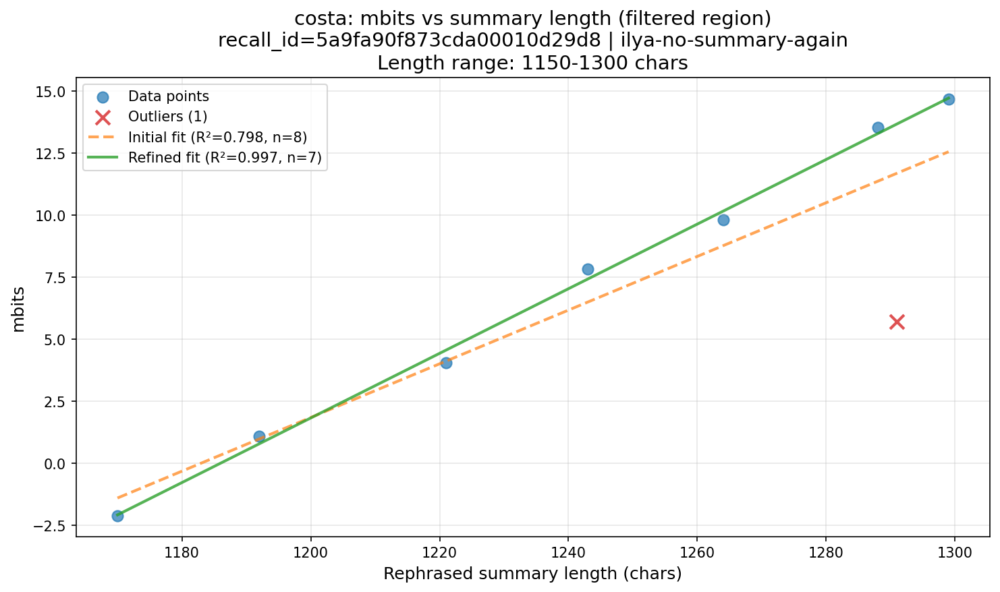

Story: costa | Suffix: ilya-no-summary-again
Summary length range: 1150 - 1300 chars
Found: 8 summaries (1 outliers)

| rephrased_summary_id | rephrased_summary_text | summary_length | mbits | distance_to_regression | is_outlier | distance_to_refined_regression |
|---|---|---|---|---|---|---|
| summary_gpt4o_25_1 | My daughter Marie passed away. It's been twenty-eight years since her death. Marie died at Methodist Hospital after undergoing surgery for appendicitis. At that time, ether was commonly used during operations. Victoria visited Marie in the hospital and noticed she was still under the effects of ether. Despite this, a nurse insisted on getting Marie out of bed, which Victoria questioned. When they attempted to move her, Marie fainted. I hold them responsible for the tragedy of the blood clot. Marie was expected to walk home after ten days, but instead, the hospital called us to pick her up. I had prepared coffee and cake for her return. Marie was saying her goodbyes to friends at the hospital when I was told to sit and wait. I prayed for another patient there. A nurse then informed me that Marie had fainted. I became hysterical and blamed the hospital. Marie was only 18 years old when she died. My husband and I were waiting for her to come home. My daughter Rita collapsed upon hearing the news. Before collapsing, Marie had complained of leg pain, and a blood clot was suspected to be the cause of her death. Both my husband and son suffered heart attacks. | 1170 | -2.13 | 0.7164 | No | 0.0398 |
| summary_gpt4o_29_1 | I lost my daughter, and it has been twenty-eight years since she passed away. She died at Methodist Hospital after undergoing surgery for appendicitis. The operation took place late on a Saturday afternoon, and Victoria visited her the following morning. My daughter was still under the effects of ether, but the nurse insisted on getting her out of bed. She fainted and was put back in bed. I hold them responsible for the blood clot she developed. I was waiting for a call to bring her home, but I didn't have a phone at the time. The lady at the store informed me about Marie's discharge. I got ready to pick her up, cooking and asking Rita for help. Marie was saying goodbye to her friends when the hospital called me to come get her. When I arrived, the nurse told me to sit and wait. I prayed for another patient, but then a nurse informed me that Marie was in trouble. She was sweating, and I accused them of causing her death. Marie died as I turned away, and Rita fainted upon hearing the news. The hospital said she had a blood clot. My husband suffered a heart attack from the shock, and my son Michael also had a heart attack. The entire neighborhood was shocked by Marie's death. | 1192 | 1.07 | 0.0973 | No | 0.2909 |
| summary_gpt4o_31_1 | My daughter passed away. It will be twenty-eight years this month. She died at Methodist Hospital after undergoing surgery for appendicitis. The operation took place late Saturday afternoon, and by Sunday morning, Victoria went to see her. Marie was still under the effects of ether. Victoria noticed a chair, and the nurse explained that they needed Marie to get out of bed, following the doctor's orders. When they moved her, Marie fainted, and I hold them responsible for the blood clot that formed. She was discharged after ten days, and a lady from a store called me to pick her up. I got ready to bring her home and asked Rita to make coffee, as Marie wanted some. I arrived at the hospital with clothes for her, and Marie saw me from the window. They asked for ten dollars for her stay, and a nurse told me to sit down. I prayed for another patient, and a nurse mentioned that Marie was in a cold sweat. They took me to see Marie, and I accused them of causing her death. The doctor said they didn't know what happened. Marie died when I turned away. Rita was so shocked that she collapsed and has been in pain ever since. They later said it was due to a blood clot. My husband and son both suffered heart attacks. | 1221 | 4.06 | 0.0565 | No | 0.4965 |
| summary_gpt4o_28_1 | My daughter Marie passed away twenty-eight years ago on April 30th. She died at Methodist Hospital after undergoing surgery for appendicitis late on a Saturday. The next morning, Victoria visited her while she was still under the effects of ether. The nurse wanted to get Marie out of bed, but Victoria disagreed with this decision. When they attempted to move her, Marie fainted. I hold them responsible for the blood clot that led to her death. I was waiting for a call from the hospital to pick her up when the store lady informed me of her discharge. I prepared coffee and cake for her return and went to the hospital to bring her home. Marie was saying her goodbyes to friends, and the hospital charged an additional ten dollars for her stay. A nurse asked me to sit and wait, during which I prayed for another patient. The nurse inquired if Marie had ever fainted before, which made me hysterical with fear for her safety. Marie was in a cold sweat and then passed away. I blamed the doctors for her death. Both my husband and son suffered heart attacks, and the hospital staff tried to console me. My family gathered, and everyone was in shock. My sisters were waiting for Marie's return, and her death deeply affected the neighborhood. | 1243 | 7.83 | 1.3209 | No | 0.3965 |
| summary_gpt4o_22_1 | My daughter passed away twenty-eight years ago this month. She died at Methodist Hospital following an appendicitis surgery. Victoria visited her the morning after the procedure and noticed a chair meant for helping Marie get out of bed. The nurse insisted on adhering to the doctor's instructions, and when they attempted to get Marie out of bed, she fainted. I believe moving her caused a blood clot. I was anticipating a call to bring Marie home after ten days. A woman from a store contacted me about Marie's discharge. I prepared for her return with coffee and cake. When I went to the hospital to pick her up, they informed me it would cost an additional ten dollars for her stay. At the hospital, a nurse inquired if Marie had ever fainted, which made me realize something was wrong. My daughter died just as I stepped away. Marie was 18 and ready to come home when she passed. I was distraught and blamed the hospital for her death. Rita, my other daughter, fainted upon hearing the news and has experienced leg pain since Marie's passing. They eventually stated that Marie died from a blood clot. I refused to let the hospital handle Marie. My husband and son suffered heart attacks after her death. Her passing shocked the entire family and neighborhood. | 1264 | 9.81 | 1.0338 | No | 0.3489 |
| summary_gpt4o_26_1 | My daughter passed away a long time ago in a hospital after undergoing an appendicitis surgery. The operation took place late on a Saturday, and the following morning, my other daughter, Victoria, went to visit her. Victoria noticed a chair in the room and was told by the nurse that they needed to get my daughter out of bed. Victoria was concerned because my daughter was still under the effects of ether. When they attempted to move her, she fainted. I hold them responsible for the blood clot that formed. I was expecting a call to pick her up, but instead, a store lady informed me to come and get my daughter. I got everything ready to bring her home and prayed for another sick woman in the hospital. As I felt chills, a nurse's aide brought blankets. A nurse inquired about fainting spells, and when I went to see my daughter, she was sweating heavily. I accused the staff of causing her death. A female doctor admitted they were unsure of what happened. I was in a state of hysteria and refused assistance. I broke the tragic news to my family, and Rita collapsed upon hearing it. Since her sister's death, Rita has been in pain. The hospital attributed it to a blood clot, but I refused to let them handle my daughter. That night, both my husband and son suffered heart attacks. | 1288 | 13.54 | 2.1601 | No | 0.2499 |
| summary_gpt4o_32_1 | My daughter passed away twenty-eight years ago at Methodist Hospital after undergoing surgery for appendicitis. Victoria visited her while she was still under the effects of ether. The nurse attempted to get her out of bed, and I hold them responsible for the blood clot that formed. I was waiting for a call to bring her home, having prepared clothes and coffee for her return. The hospital called to inform me she was discharged, so I went to pick her up. Upon arrival, the nurse asked me to sit down, and I prayed for another woman there. The nurse mentioned that Marie had fainted. I was led to my daughter’s room, where Marie was sweating profusely. I accused the staff of causing her death. The doctor admitted they were unsure of what happened, and I became hysterical. Marie was only eighteen, and my husband was waiting for her at home. The hospital called me again, and Rita thought I was upset about Marie. I declined medical assistance at the hospital and informed Rita that Marie had died, causing Rita to faint. They explained that a blood clot was the cause of her death. I warned them not to touch Marie and screamed all the way home, with everyone hearing my cries. My husband suffered a heart attack, and my son Michael also collapsed. The entire neighborhood was in shock. | 1291 | 5.72 | 5.9379 | Yes | 7.8928 |
| summary_gpt4o_33_1 | My daughter passed away. It happened twenty-eight years ago at Methodist Hospital. She underwent surgery for appendicitis late on a Saturday afternoon. Victoria visited her the following Sunday morning and noticed a chair by her bed, indicating the nurse intended to help her out of bed. Victoria argued that she was still under the effects of ether, but the nurse followed the doctor's instructions and got her out of bed. She fainted and was put back in bed. I hold them responsible for the blood clot she developed. They discharged her after ten days. A woman from the store called me, and I prepared her clothes for her return home. Rita continued to cook for us, and I planned to make a pot of coffee for her. Her surgery was on April 20th. I gathered her clothes and a coat while Marie was saying goodbye to friends. The hospital requested additional board fees. When I arrived, the nurse asked me to sit down, and I prayed for another patient. I noticed I was feeling chills. I was then called in for my daughter, who was sweating heavily. I accused them of causing her death. The assistant doctor offered no explanation. Marie died as I turned away. They summoned my family to the hospital. Rita arrived and fainted upon hearing the news. My husband and son suffered heart attacks afterward. | 1299 | 14.67 | 2.0986 | No | 0.0520 |